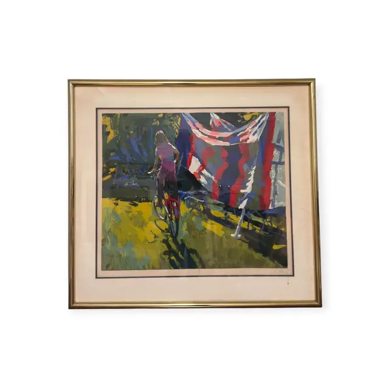
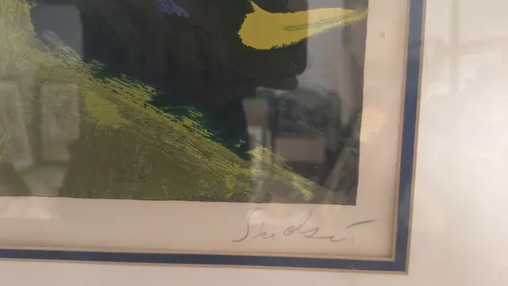
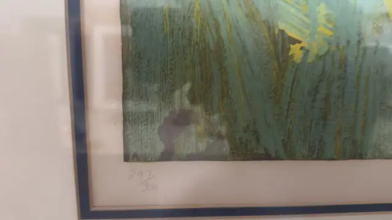
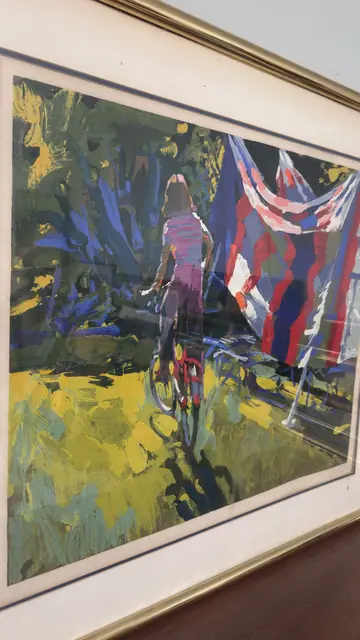
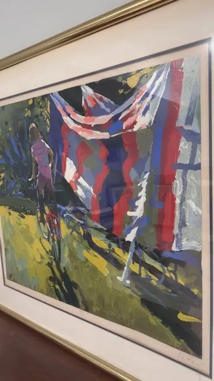
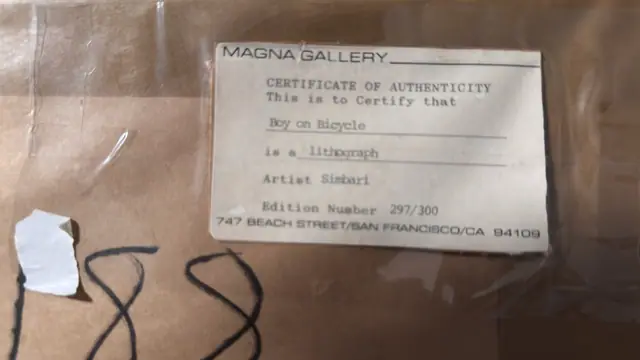

Paintings & Prints
Simbari, Boy on Bicycle, Signed Lithograph, Numbered Edition, Framed
Simbari · third quarter of the 20th century
Price Upon Request






About the Item
Simbari. Broad slabs of unmixed colour build the scene: sheets and striped towels in red, white and cobalt hang across the right half, while a small figure in violet and pink pushes a bicycle along a shadowed path at the left. The garden behind is laid in with vigorous vertical strokes of olive, sap green and cadmium yellow, and the whole surface is worked with the flat palette-knife touch typical of the artist. There is no modelling and almost no line - the picture is held together entirely by colour blocks and their edges. Pencil signed and numbered in the margin, with a gallery certificate on the backing paper. Medium: lithograph on paper. Signed lower right margin, in pencil, reading "Simbari". Edition: 297/300. Accompanied by a certificate: Typed certificate of authenticity taped to the paper backing certifying 'Boy on Bicycle' as a lithograph by Simbari, edition number 297/300. Inscribed on the reverse or mount: 297/300; MAGNA GALLERY; CERTIFICATE OF AUTHENTICITY; This is to Certify that. Condition: Sheet and mat are clean; the mat has slightly warm/toned edges. The brown paper backing is intact with original tape and hanging cord. Reflections on the glass in most frames.
Details
- Creator:
- Simbari
- Creation Year:
- third quarter of the 20th century
- Dimensions:
- Height: 40.0 in (101.6 cm)
Width: 43.5 in (110.49 cm)
outside of frame - Medium:
- lithograph on paper
- Edition:
- 297/300
- Period:
- 20Th
- Condition:
- Offered in the condition shown in the photographs.
- Reference Number:
- VO-171
- Documentation:
- Typed certificate of authenticity taped to the paper backing certifying 'Boy on Bicycle' as a lithograph by Simbari, edition number 297/300.
- Gallery Location:
- MAGNA GALLERY